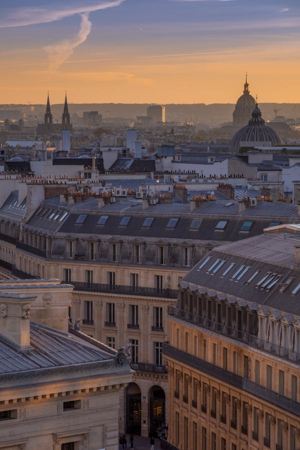
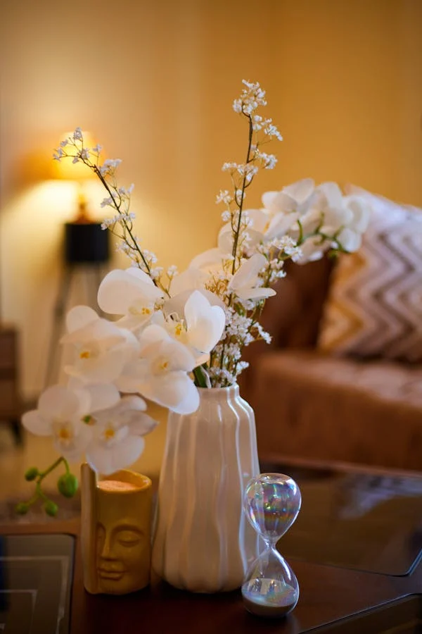
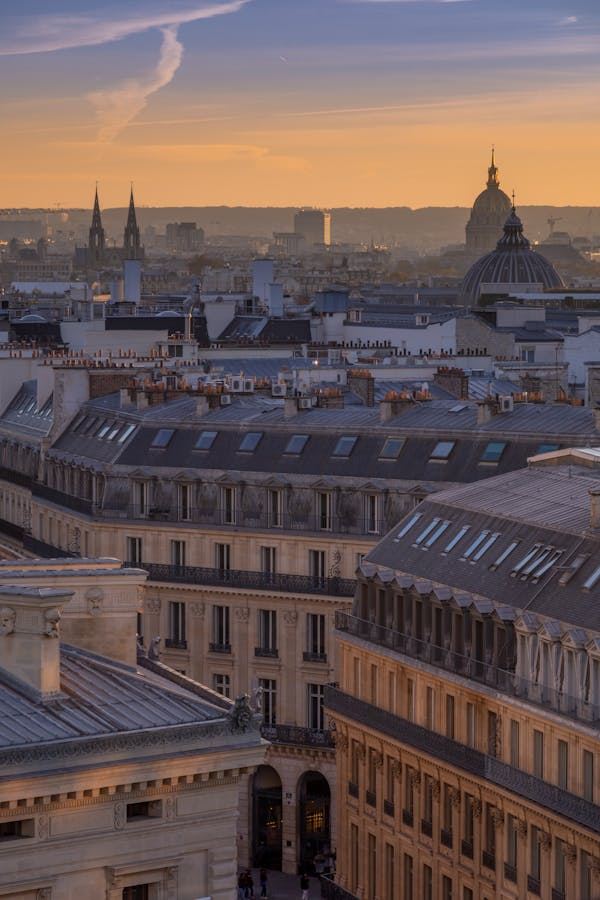
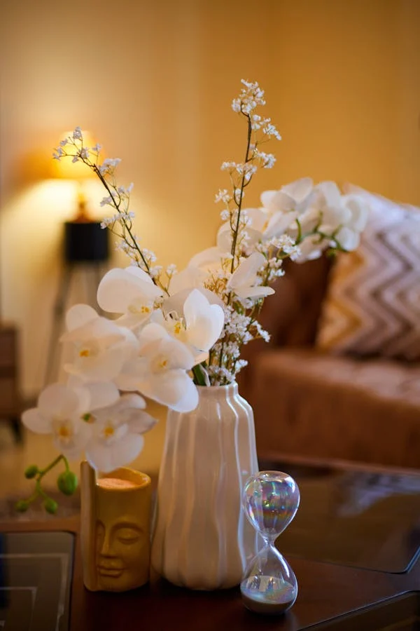

Teste
A cor bege, muitas vezes considerada uma tonalidade neutra, é sinônimo de conforto e acolhimento. Sua suavidade e versatilidade fazem dela uma escolha popular em diversas áreas, desde a decoração de interiores até a moda. O bege é uma cor que remete à naturalidade, evocando a essência da terra, da areia e da madeira, criando uma sensação de proximidade com a natureza.
No ambiente doméstico, o bege promove uma atmosfera serena e tranquila. É uma cor que pode iluminar espaços pequenos, tornando-os mais amplos e arejados. Quando aplicada em paredes, móveis ou acessórios, o bege oferece uma base neutra que permite a combinação com outras cores e texturas, facilitando a personalização do ambiente. Além disso, essa tonalidade combina facilmente com uma paleta de cores mais vibrantes, criando um equilíbrio harmonioso.
Psicologicamente, o bege está associado à estabilidade e à calma. Ele é capaz de transmitir uma sensação de segurança, fazendo com que as pessoas se sintam mais relaxadas e confortáveis em seu espaço. Em tempos de estresse e agitação, optar por ambientes em tons de bege pode ajudar a criar um refúgio de paz e tranquilidade.
 



Na moda, o bege é uma cor atemporal. Peças em bege são versáteis e podem ser facilmente combinadas com qualquer outra cor, tornando-se uma escolha ideal para o dia a dia. Além disso, a cor é frequentemente associada a elegância discreta, sendo uma opção popular para looks sofisticados, mas confortáveis.
Em resumo, o bege é muito mais do que uma cor neutra; ele é um símbolo de conforto e acolhimento. Seja em casa ou no vestuário, sua presença suave e tranquilizadora tem o poder de transformar ambientes e influenciar estados emocionais, tornando-o uma escolha atemporal e sempre relevante.
Exemplo de manipulação DOM
Este é um parágrafo.